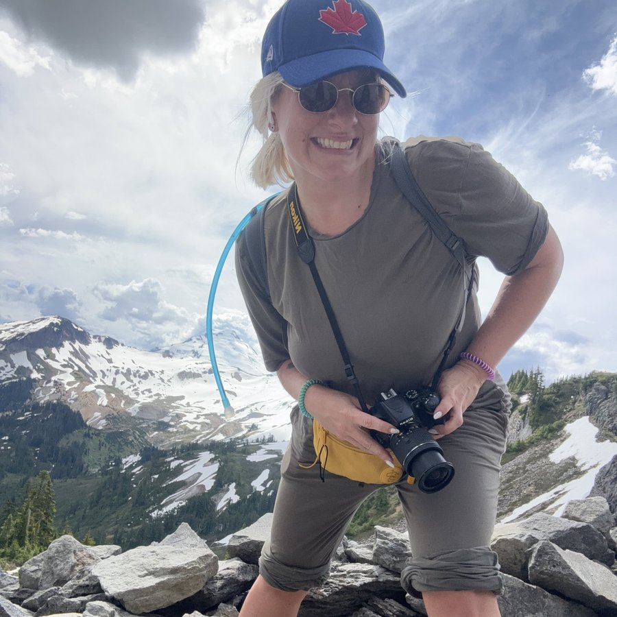

I plan trips people remember for the rest of their lives. I've also spent over a decade in digital marketing — strategy, optimization, and the kind of process work that makes a whole team faster. This page is the honest, unfiltered version of both, including the AuDHD brain behind them.

who I am
Strategic digital marketing leader with 10+ years of experience across creative campaign execution, team training, and process optimization in tech, small business, and nonprofit sectors. I'm highly organized, genuinely enjoy technical problem solving, and tend to deliver results on budget that end up exceeding expectations — and delighting the people I work with.
Outside of client work, I run Deathbed Memories — a bucket-list travel consulting brand built around solo, independent, off-the-beaten-path travel. The same instincts that make me good at marketing (pattern recognition, relentless organization, a refusal to settle for "good enough") are exactly what show up in how I plan five-month solo treks through Latin America.
People who've worked with me tend to describe the same few things: I hyperfocus hard on problems I care about, I pick up new tools fast, and I'm honest even when it would be easier not to be. I hold a strong sense of fairness, I'm genuinely slow to judge, and I'd rather build a small number of trusted working relationships than a large network of shallow ones.
my autistic & ADHD profile
I'm AuDHD, and over time I've learned the environments and working styles that bring out my best work. Here's the practical version.
I do best with explicit, direct communication rather than hints or implied context — tell me plainly what you need. In exchange, I'm very good at catching tone and subtext that goes unsaid, even when I'm not one for small talk myself, and I'd always rather say something honest than something vague and comfortable.
I do my best work with real autonomy over how a task gets done, not just what the outcome should be. A heads-up before switching gears goes a long way — abrupt transitions are the hardest part of any day for me. Give me something I care about and I'll hyperfocus on it happily.
Strong pattern recognition and analytical thinking, especially useful for auditing a messy process and catching what everyone else missed. A creative thinker with a genuine knack for picking up new digital tools quickly. An unusually strong sense of fairness and follow-through — I take deadlines and commitments seriously. List-making and documentation aren't just habits for me, they're how I think.
Deadlines and expectations stated plainly, in writing, with lead time. Feedback given directly rather than softened into ambiguity — I'd always rather know exactly what to fix. A small, consistent team over a large, shifting one, and async-friendly work over a calendar full of meetings.
experience
Fundraising agency supporting North America's largest nonprofits to find monthly donors. Optimized complex multi-channel campaigns through data-driven A/B testing to consistently meet or exceed projection targets; audited and overhauled campaign operations with new onboarding materials and scalable templates, letting the team manage 60% more campaigns at once. Earned three promotions, expanding departmental capacity by 100% and contributing to a doubling of annual revenue. Introduced automation tools that saved 1.5 hours daily per team member, and partnered with finance to cut digital tool and ad-spend costs by 45% annually.
Influencer agency supporting clients like Microsoft and Fox Home Entertainment. Led execution of international creative campaigns through strategic influencer partnerships, built client pitch decks informed by market research, and delivered clear daily/weekly performance reporting. Facilitated media interviews and press release distribution while fostering long-term relationships with clients and influencers across multiple markets.
Not-for-profit advocacy organization researching and lobbying for progressive policy. Developed a comprehensive social media strategy and brand guidelines, led a website migration from WordPress to NationBuilder, and designed the organization's annual magazine in Adobe InDesign. Planned and executed a large-scale advocacy campaign across seven Ontario universities and introduced Slack, Trello, Buffer, and SPSS to streamline team collaboration.
Website design software agency supporting community businesses with email marketing and analytics training. Expanded the agency's service offerings — content creation, SEO consulting, social strategy, email marketing, and e-commerce setup — and delivered client training on the company's website management software.
education
by the numbers
Skills: Google Workspace, Adobe Suite, Asana, Slack, Canva, Trello, AI tools, CRM, SEO, CMS, email marketing, ad platforms, and more.
Download résumélet's talk
I'm open to full-time, contract, or freelance marketing work — reach out and let's talk.